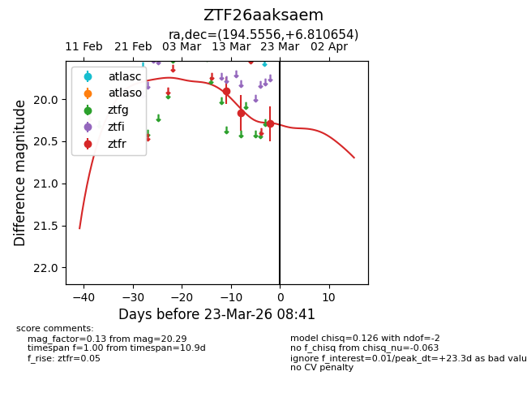
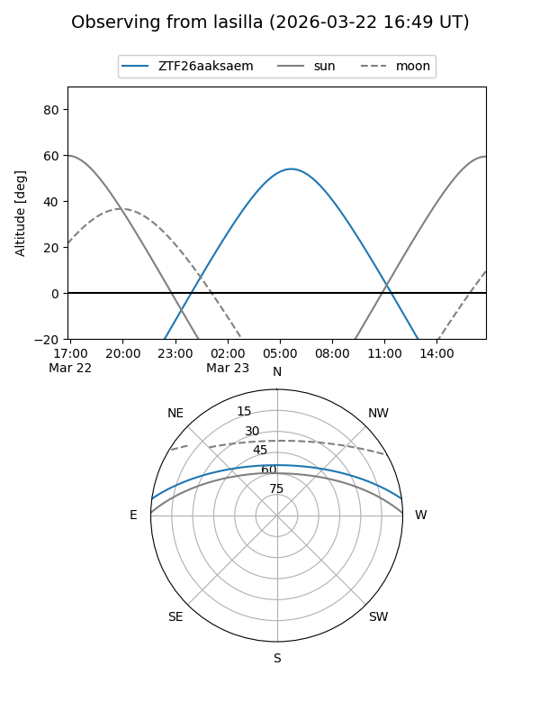
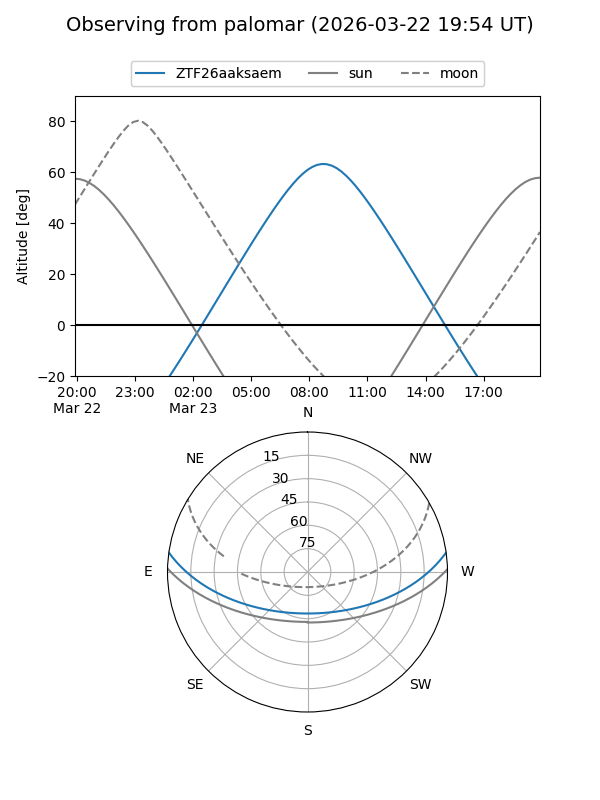
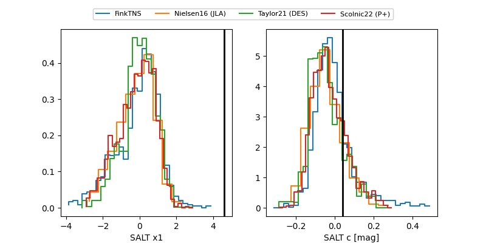

ZTF26aaksaem
Target ZTF26aaksaem at 2026-03-23 08:43
Aliases and brokers:
FINK: link
Lasair: link
ALeRCE: link
alt names
ZTF26aaksaem (ztf,fink_ztf)
Coordinates:
equatorial (ra, dec) = 194.5556,+6.81065
equatorial (HMS+DMS) = 12:58:13.33,+06:48:38.35
galactic (l, b) = (307.7727,+69.61861)
Flags:
Photometry:
last ztfr=20.29
3 ztfr detections
Lightcurve

Visibility


Additional plots
